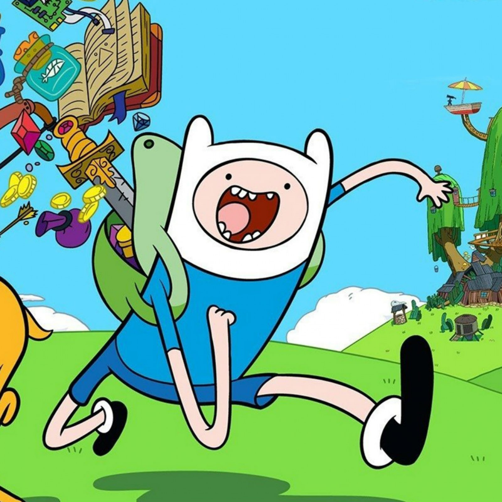

Finn Mertens
17 anos | Humano | Aventureiro
Biografia
Finn é um garoto humano de 17 anos, que junto com seu irmão adotivo Jake, vive procurando aventuras pela Terra de Ooo.
No início da série Finn tinha cerca de 1,50m de altura. Seus olhos são azuis, possui um chapéu com orelhas, uma camiseta azul-claro, um short azul escuro, uma mochila verde e cabelos loiros herdados de sua mãe.